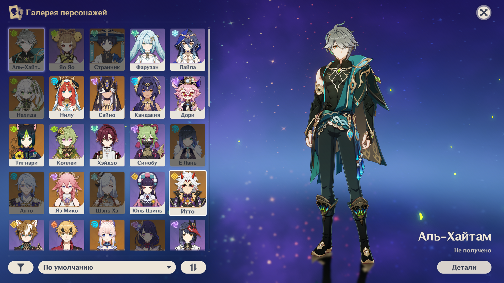

Не можете найти нужный вам гайд на того или иного персонажа? Не понимаете некоторые игровые термины? Не знаете как правильно собрать отряд для прохождения бездны? Или вам нужна помощь в прохождении какого-либо задания? Всем привет! Я могу помочь вам разобраться во всех вопросах, которые касаются игрового процесса, или показать как пройти сложные квесты без особых усилий.
Мой основной аккаунт
Расскажу о себе и своем аккаунте. Я играю ежедневно с января 2021 года, и могу с уверенностью заявить, что за такое время игры я освоила все основные механики и комбинации различной экипировки, поэтому смогу посоветовать вам все самое лучшее, чтобы ваш игровой процесс стал ещё более комфортным. Начнем обзор.
Профиль и основная информация
Оружие и имеющиеся персонажи

Один из лучших персонажей (по прокачке) на аккаунте
На данный момент мною пройдены все доступные задания: задания архонтов, задания легенд, всевозможные встречи с персонажами, побочные мировые квесты. Получено большинство скрытых достижений за выполнение мировых квестов/ежедневных заданий.
Мои контакты
За помощью можете обращаться ко мне в Telegram или написать мне в VK. В сообщении пожалуйста укажите ваш ранг приключений, имя/никнейм (чтобы знать как я могу к вам обращаться), и собственно причину обращения. Если вам нужен совет по сборке персонажей, то я смогу сразу ответить на этот вопрос. Для помощи в прохождении какого-либо задания нужно будет обговорить день и время когда нам обоим будет удобно это сделать.